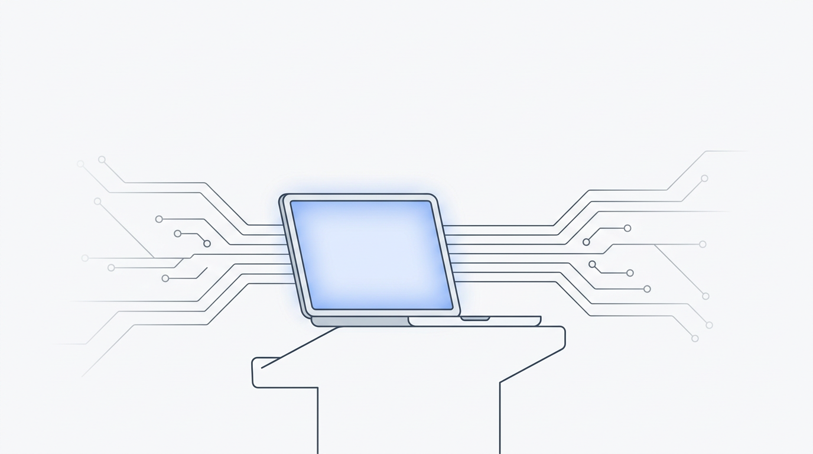
Edge AI
Unleashed: On-Device Intelligence
Who am I
Nishant Thakur
Adobe · Bengaluru · 15 years in tech
linkedin.com/in/nishantkthakur
github.com/nkthakur48
Full-Stack + AI
MS Data Science
Curious builder
Believes in eternal learning
Live walkthrough
Every AI demo you've seen
had an API key behind it.
This one won't.
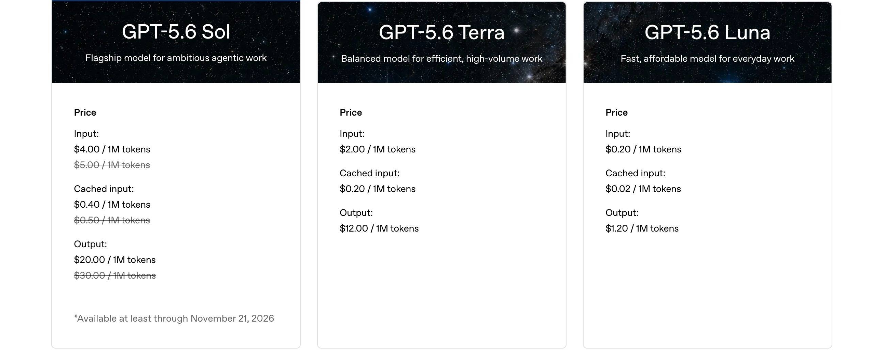
openai.com/api/pricing
What if none of this
was necessary?
Everything from here runs entirely on your machine
Three shifts made this practical
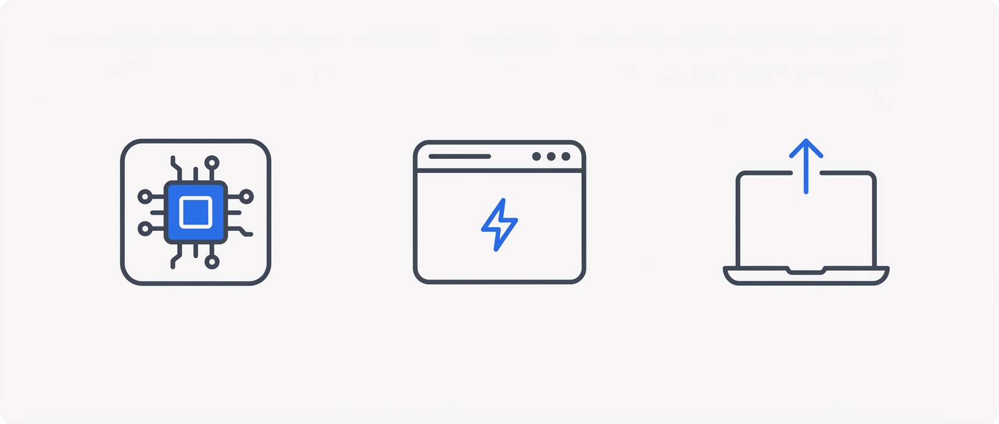
QuantizationWebGPUHardware
Today's spectrum
Cloud API
→
On-Device
(Laptop/Phone)
→
In-Browser
We work this spectrum right to left. Everything stays on this machine.
100–500ms
network round-trip
What Edge AI solves
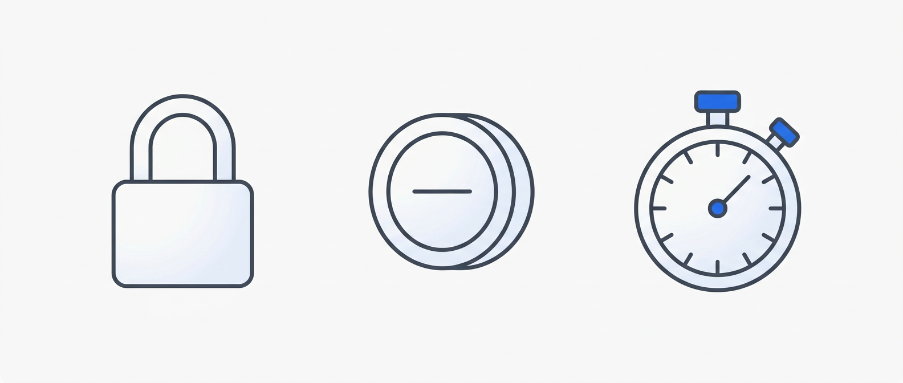
PrivacyCostLatency
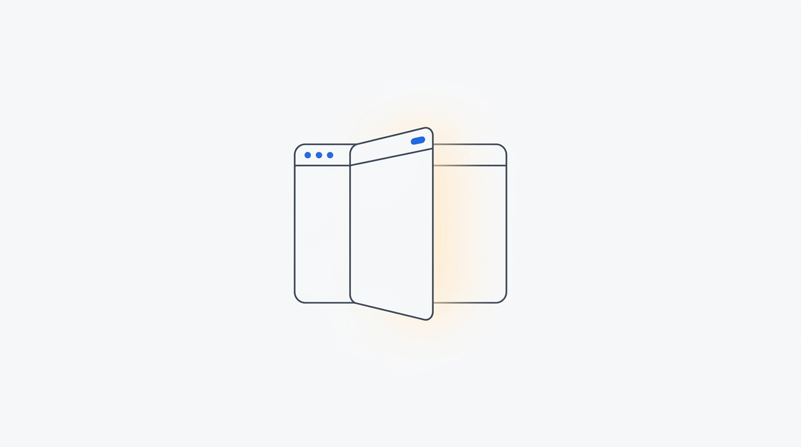
Phase 1 — AI in the Browser
Demo 1 · Live
Translation
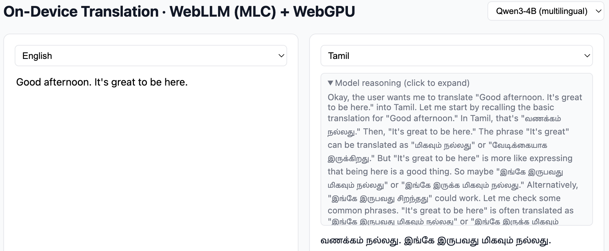
WebLLM (MLC) + WebGPU · Qwen3 (better multilingual coverage)
Demo 2 · Live
Document Understanding
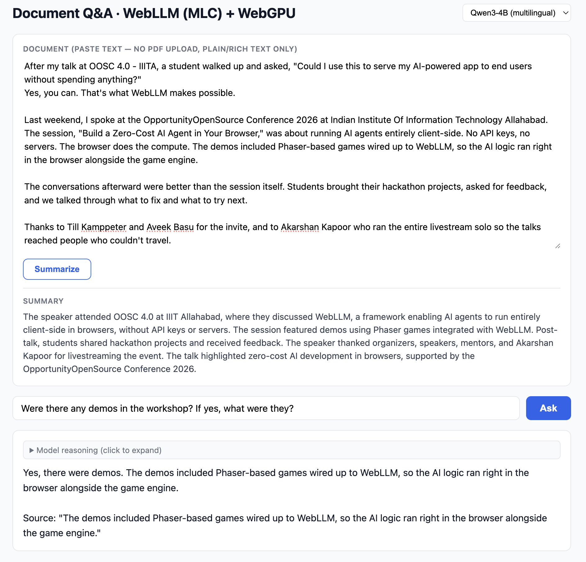
Paste text, ask questions, grounded answers · Qwen3-4B / Gemma-2-2B
Under the hood: browser as edge runtime
Browser
→
WebGPU
→
WebLLM (MLC)
→
Quantized Model
(INT4/INT8)
"The browser is the most widely deployed edge runtime in the world. Every student already has it."
Audience pulse
Who's run an AI model locally?
By the end of this talk, you'll know how in under five minutes.
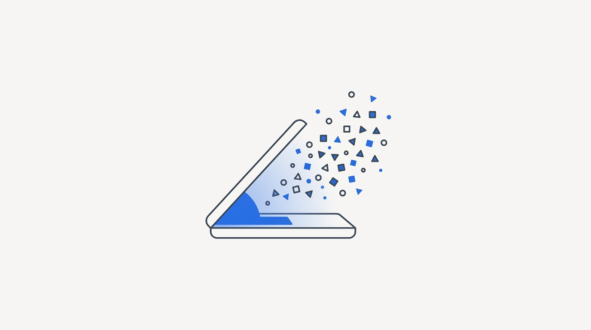
Phase 2 — Full-Device Inference
Your laptop has a lot more power than a browser tab is allowed to use. Let's unlock it.
Demo 3 · Live
Local Text AI with LM Studio
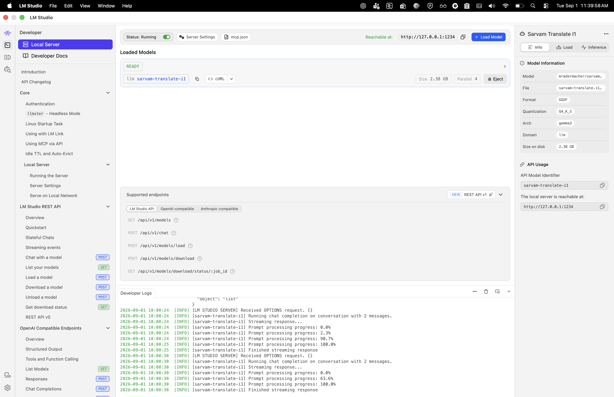
LM Studio · general chat, then a grounded Tamil translation comparison
Under the hood: the on-device AI stack
LM Studio
→
GGUF Quantized Model
→
llama.cpp Runtime
(MLX on Apple Silicon)
→
CPU/GPU Inference
"16GB RAM runs a 7B model comfortably. 32GB handles 13B with patience. 70B needs more RAM than most laptops have."
This transfers directly
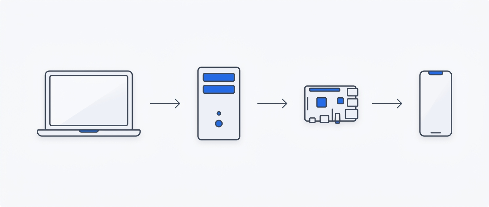
LaptopWorkstationJetson / PiPhone
Same quantization formats (GGUF, INT4, INT8) across devices — the skill you learn here transfers to embedded and mobile deployment.
Recap
Zero API calls.
Every AI moment in this session ran on local compute — the GPU usage you saw is the proof, not a network log.
Phase 3 — Edge AI in Your Classroom
What's Next
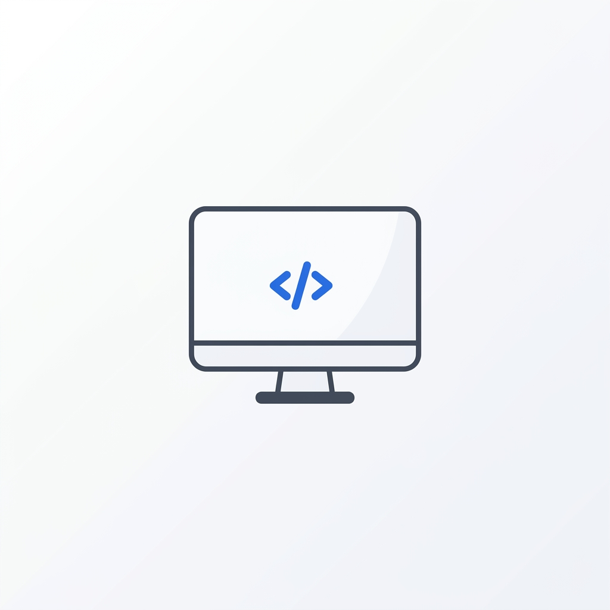
CS / IT
Browser-based translation and document Q&A tools running entirely in Chrome — no server, no Docker.
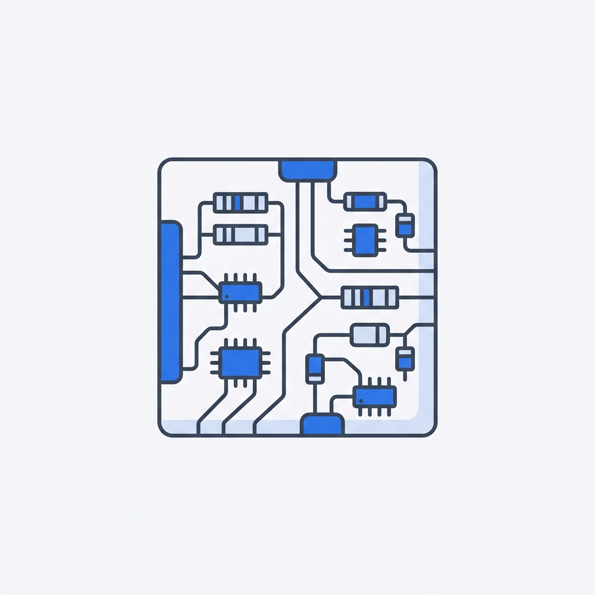
Electronics / ECE
Grounded Q&A over datasheets and manuals, running locally via Ollama on a Jetson Nano or Raspberry Pi.
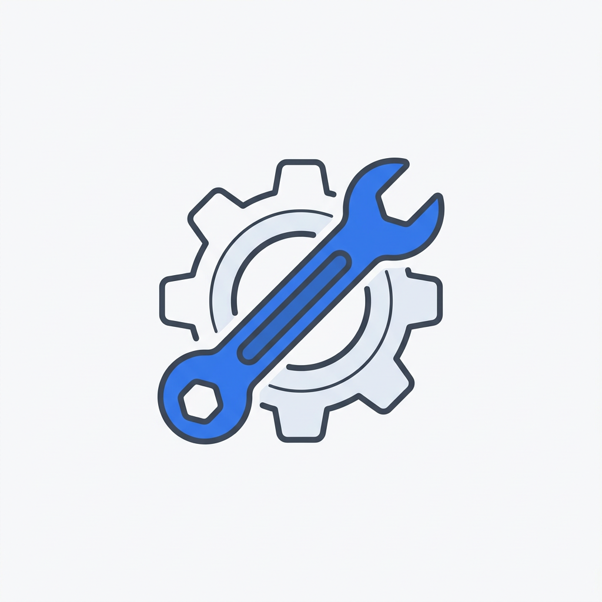
Mechanical / Civil
Multilingual safety manuals and specs translated on-site, no cell coverage needed.
Research / Any Dept
Sensitive data never leaves the lab machine — no IRB concerns.
The five-minute setup
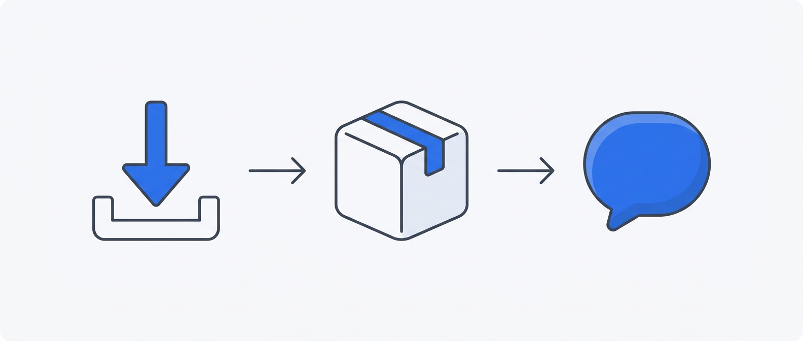
InstallDownloadAsk
Resources + What's Next
WebLLM docsgithub.com/mlc-ai/web-llm
Gemma 2 2Bhuggingface.co/google/gemma-2-2b-it
Qwen3-4Bhuggingface.co/Qwen/Qwen3-4B
LM Studiolmstudio.ai
Sarvam-Translate modelhuggingface.co/sarvamai/sarvam-translate
📦 All codegithub.com/nkthakur48/edge-ai-talk
Papers
WebLLM: A High-Performance In-Browser LLM Inference Engine
arxiv.org/abs/2412.15803
Gemma 2: Improving Open Language Models at a Practical Size
arxiv.org/abs/2408.00118
Qwen3 Technical Report
arxiv.org/abs/2505.09388
Characterizing WebGPU Dispatch Overhead for LLM Inference
arxiv.org/abs/2604.02344
A Comprehensive Study on Quantization Techniques for LLMs
arxiv.org/abs/2411.02530
Open to Q&A
Free. Offline.
Already yours.